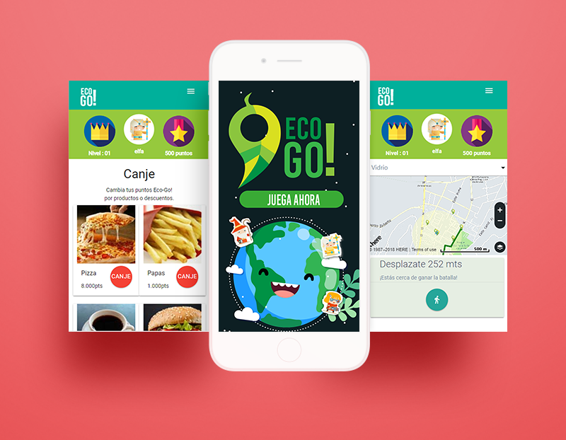

EcoGO!
EcoGO! fue el proyecto ganador de la Hackaton "Open House Laboratoria". Es una propuesta que busca incentivar el reciclaje a través de la gamificación y utilizando las API de geolocalización de HERE. Desarrollado totalmente con JavaScript, el proyecto además utiliza validación con QR, autentificación y almacenamiento de datos en Firebase y conexión a Facebook.